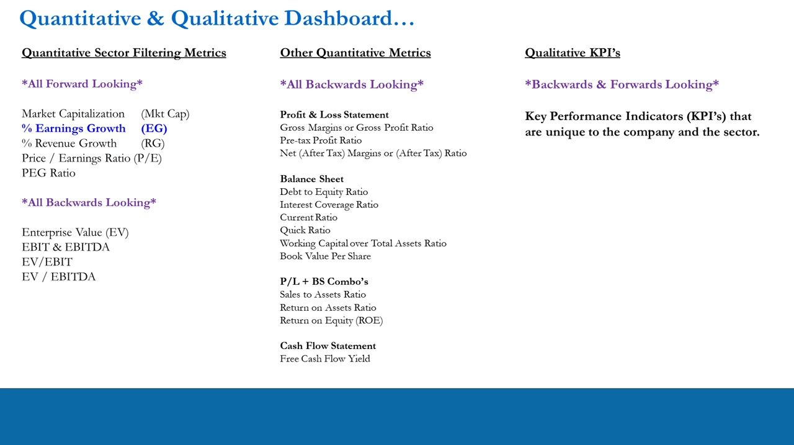
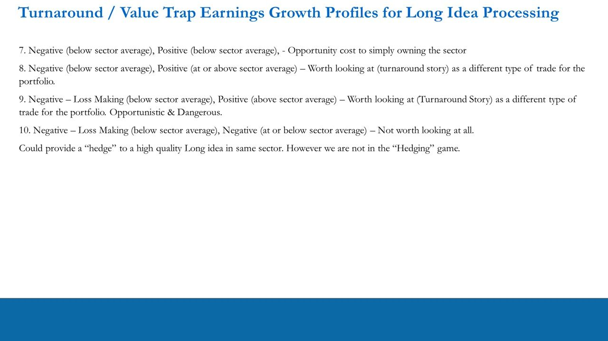
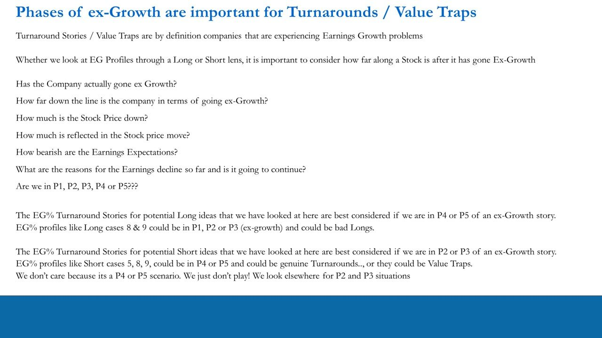
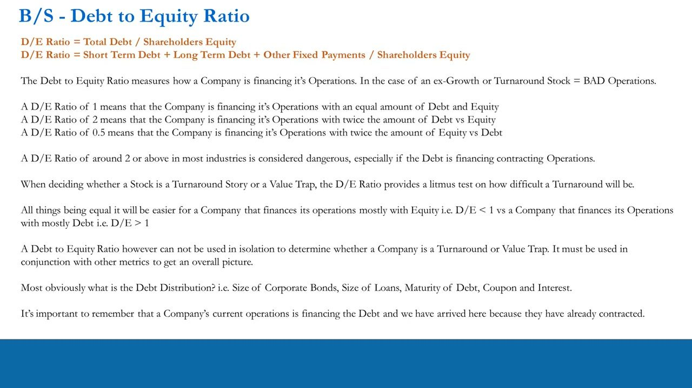
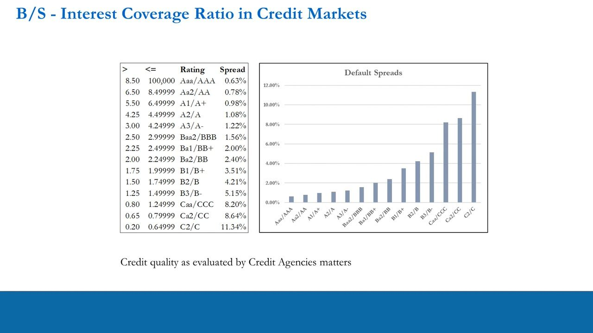
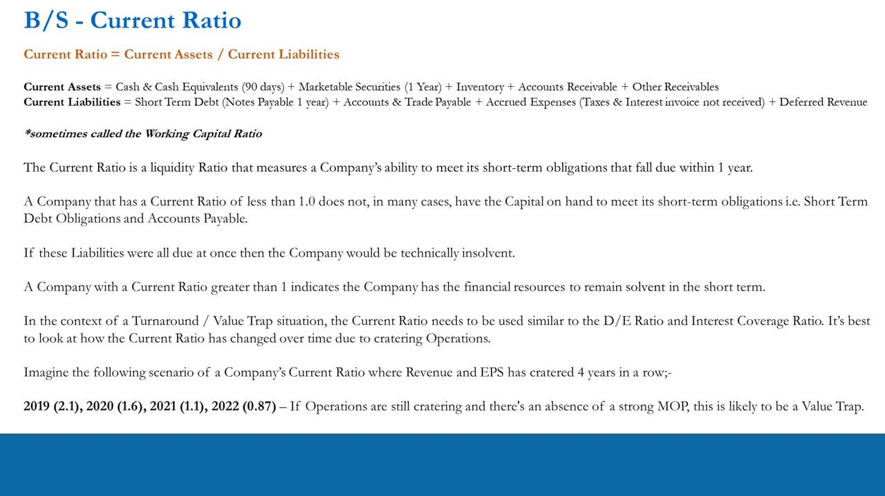
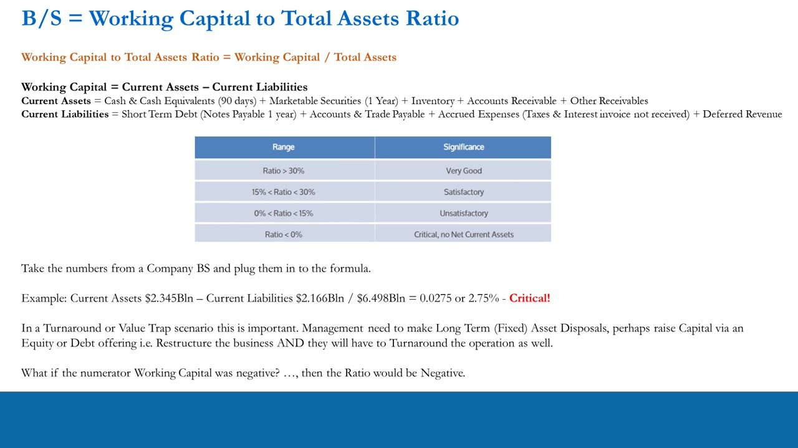
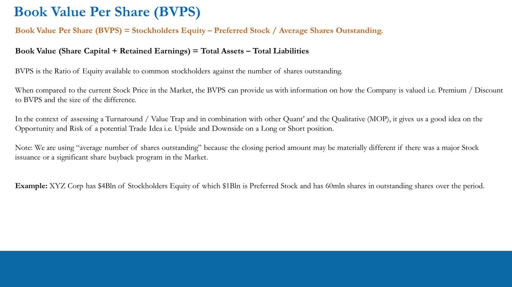
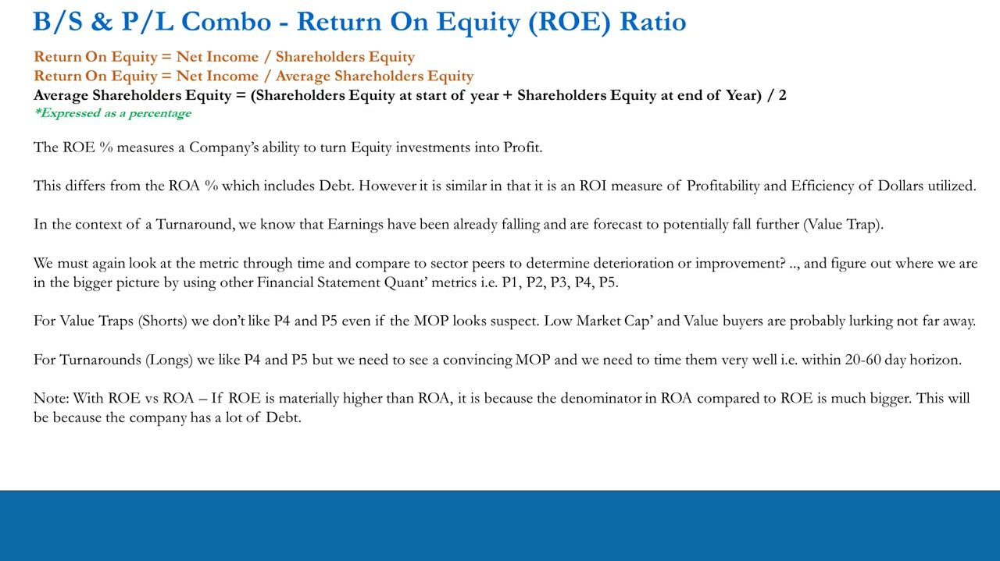
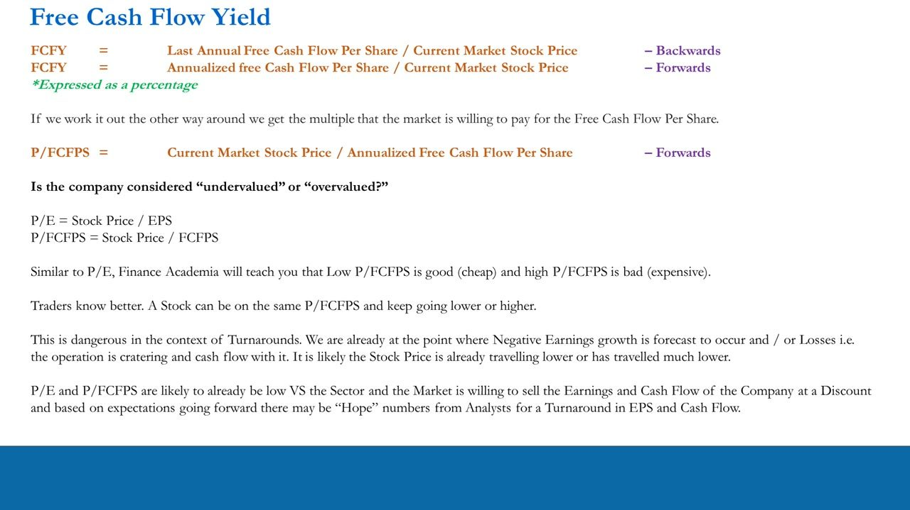

Trade Idea Generation – Quantitative Processing 6
Turnaround Stories vs Value Traps: the non-ideal Earnings-Growth profiles that don't fit the classic long/short set-up, the P1–P5 ex-growth phasing that decides the timing, and the backwards-looking BALANCE-SHEET ratio toolkit (D/E, Interest Coverage + the 14-tier credit-rating spread table, Current Ratio, Working-Capital/Total-Assets, Book Value Per Share, Sales-to-Assets, ROA, ROE, FCF Yield) you use to tell a genuine recovery apart from a stock that's cheap for a reason.
The non-ideal EG profiles (Long cases 7-10, Short cases 5/8/9) are Turnaround Stories OR Value Traps — cheap for a reason, deteriorating. There is no right/wrong answer from forward-looking quant alone: you resolve it with a backwards-looking balance-sheet checklist plus the P1–P5 ex-growth phase (turnaround LONGS enter P4/P5, value-trap SHORTS P2/P3; an EG2 built on 'hope/fantasy' is the warning) — then the qualitative MOP.
The gist
- Non-ideal EG profiles fall into two camps: a genuine Turnaround Story (earnings inflecting positive, improving fundamentals) or a Value Trap (cheap for a reason — earnings keep deteriorating and the 'recovery' is a 'hope/fantasy' number from analysts). The flagged profiles are EG_Profiles_Longs cases 7, 8, 9, 10 and EG_Profiles_Shorts cases 5, 8, 9 — the same profiles viewed through a long (P&L-making) or short (loss-making) lens, which is why they don't fit the classic set-ups.
- The P1–P5 ex-growth phase is the KEY timing variable. Turnaround LONGS are best in P4/P5 (stock beaten up 50-90%, coming off a low base — biggest opportunity); Long cases 8 & 9 in P1-P3 could be bad longs. Value-trap SHORTS are best caught in P2/P3 (early ex-growth, EG2 likely a hope/fantasy number, downside remaining); Short cases 5/8/9 in P4/P5 could be genuine turnarounds OR traps — 'we don't care, it's P4/P5, we just don't play; we look elsewhere.'
- These are a DIFFERENT type of trade from the classic long/short — useful for diversification, not the default. In a 10x stock portfolio (e.g. 6x longs, 4x shorts) you might hold 2 or 3 of these positions, sized appropriately, at any one time.
- You arrive here after the FORWARD-looking quant (Mkt Cap, EG, RG, P/E, PEG + EV/EBIT/EBITDA) has flagged non-ideal outliers. Now you do a BACKWARDS-looking quant read of the Balance Sheet + BS/PL combos (last annual report + quarterlies), then the qualitative Management Operating Plan (MOP). For a turnaround to be on the cards there must be a viable, aggressive, believable new MOP (capital restructurings, asset divestments, investment in performing assets, layoffs, re-org, new launches).
- The balance-sheet ratio toolkit, with exact formulas + thresholds: D/E = Total Debt / Equity (~2+ dangerous); Interest Coverage = EBIT / Interest ($900mln/$270mln = 3.33x, min ~2 acceptable, >3 investment grade) mapped to a 14-tier credit-rating → default-spread table (Aaa/AAA 0.63% … C2/C 11.34%); Current Ratio = Current Assets / Current Liabilities (<1.0 technically insolvent); Working-Capital / Total-Assets (>30% very good … <0% critical; 2.75% example); Book Value Per Share = (Equity − Preferred) / Avg Shares ($3bln/60mln = $50, vs $62 price = 1.24x book).
- Efficiency + profitability + cash: Sales-to-Assets (Asset Turnover) = Net Sales / Avg Total Assets (compare WITHIN sector + through time); ROA = Net Income / Total Assets; ROE = Net Income / Equity (ROE far above ROA ⇒ a lot of Debt); FCF Yield = FCF per share / stock price (invert for P/FCFPS multiple). Traders know a low multiple can keep going lower — 'cheap' is not a signal in a cratering operation.
- Every ratio is static, backwards-looking and useless in isolation: compute it each year AND quarter over time to see whether the position is strengthening or worsening (e.g. a Current Ratio cratering 2.1 → 1.6 → 1.1 → 0.87 across 2019-22 with no strong MOP is likely a Value Trap). Never short just because the last accounts look bad — the stock has probably already travelled; always think forwards.
The Quantitative & Qualitative Dashboard — where the backwards-looking work begins
- The full metric dashboard. FORWARD-looking sector filters (done already): Market Cap, % Earnings Growth (EG), % Revenue Growth (RG), P/E, PEG. Backwards-looking valuation: Enterprise Value (EV), EBIT & EBITDA, EV/EBIT, EV/EBITDA.
- This lesson works the OTHER Quantitative Metrics — all BACKWARDS-looking. P&L Statement: Gross Margins / Gross Profit Ratio, Pre-tax Profit Ratio, Net (After-Tax) Margins. Balance Sheet: Debt-to-Equity, Interest Coverage, Current Ratio, Quick Ratio, Working-Capital / Total-Assets, Book Value Per Share.
- P/L + BS combos: Sales-to-Assets, Return on Assets, Return on Equity. Cash-Flow Statement: Free Cash Flow Yield. Plus Qualitative KPIs (backwards & forwards) unique to the company and sector.
- You are here having already filtered the forward estimates and realised certain stocks' EG profiles are NOT ideal and their P/E and PEG say something is potentially wrong. The job now: find out WHAT is wrong — 'what is going on behind the curtain' — via a backwards-looking read of the financial statements (last annual report + quarterlies), then the qualitative MOP.
The forward-looking quant tells you a stock is a negative outlier; the backwards-looking balance-sheet quant tells you whether it can survive long enough to turn around — the difference between a Turnaround Story and a Value Trap.

Non-ideal EG profiles — turnaround stories and value traps
- Non-ideal EG profiles (not 'ideal' or close-to-ideal for either longs or shorts) TEND to fall into 'Turnaround Stories' and 'Value Traps' — but not always. Flagged cases: EG_Profiles_Longs = 7, 8, 9, 10; EG_Profiles_Shorts = 5, 8, 9.
- LONG lens. Case 7: positive EPS, EG1 negative (below sector) then EG2 recovers below sector (Stock −11% → +9% vs Sector +12% → +16%) — opportunity cost to just owning the sector; likely not even a real turnaround. Case 8: negative (below sector) → positive at/above sector (Stock −32% → +16%) — worth looking at as a turnaround, a different trade.
- Case 9: LOSS-making (negative EPS) year 1, positive year 2 (Stock −25% → +100% vs Sector +12% → +16%) — analysts forecast recovery of 100% of losses; biggest potential turnaround OR disappointment; Opportunistic AND Dangerous. Case 10: loss-making then MORE negative (Stock −44% → −9%) — not worth looking at; at best a 'hedge' to a quality long in the same sector, but 'we are not in the hedging game.'
- SHORT lens. Case 5: positive EPS, negative → flat-to-positive below sector (Stock −12% → +6% vs Sector +5% → +11%) — like long cases 7 & 8; catch the P2/P3 moves down if EG2 is a 'hope/fantasy' number; dangerous in P4/P5. Cases 8 & 9: loss-making (below sector) → positive above sector (8) or still negative at/below sector (9) — Turnaround or Value Trap? Opportunistic & Dangerous.
- All these profiles are essentially the SAME — you are just viewing them through a P&L-making (long) or loss-making (short) lens, which is exactly why they don't fit the classic set-ups. They still have their place: in a 10x portfolio (say 6x longs, 4x shorts) you might hold 2 or 3, sized appropriately.
The whole lesson is one question: is EG2's recovery real, or a 'hope/fantasy' analyst number over a cratering operation? Forward quant can't answer it — the balance sheet and the ex-growth phase can.

Phases of ex-growth (P1–P5) — the timing that decides everything
- Turnaround / Value Trap names are BY DEFINITION companies with earnings-growth problems — they have gone (or are going) ex-growth. Before acting, ask: Has it actually gone ex-growth? How far down the line? How much is the stock already down? How much is already in the price? How bearish are earnings expectations? Why are earnings declining and will it continue? Are we in P1, P2, P3, P4 or P5?
- Timing rule — LONGS (turnarounds): best considered in P4 or P5 of an ex-growth story (beaten up, down a lot, off a low base). Long cases 8 & 9 in P1/P2/P3 could be BAD longs.
- Timing rule — SHORTS (value traps): best caught in P2 or P3 (early ex-growth, EG2 likely a hope/fantasy number, downside remaining). Short cases 5, 8, 9 in P4/P5 could be genuine turnarounds OR traps — 'we don't care, because it's a P4/P5 scenario. We just don't play! We look elsewhere for P2 and P3 situations.'
- For value traps (shorts) we don't like P4/P5 even if the MOP looks suspect — low market cap and value buyers are probably lurking not far away. For turnarounds (longs) we like P4/P5 but need a convincing MOP and precise timing within the 20–60 day horizon.
Same EG profile, opposite trade depending on phase: a stock down 80% off a low base is a turnaround-long candidate (P4/P5) but a lethal short; the same profile early in the decline (P2/P3) is a short candidate but a bad long.

Debt-to-Equity Ratio — the litmus test on how hard a turnaround will be
- D/E Ratio = Total Debt / Shareholders Equity = (Short-Term Debt + Long-Term Debt + Other Fixed Payments) / Shareholders Equity. It measures how a company finances its operations — for an ex-growth / turnaround stock, BAD operations.
- D/E of 1 = financed with equal Debt and Equity; D/E of 2 = twice the Debt vs Equity; D/E of 0.5 = twice the Equity vs Debt. A D/E of around 2 or above is considered dangerous in most industries, especially when the debt is financing CONTRACTING operations.
- It is a litmus test on how difficult a turnaround will be: all else equal, easier for a company financed mostly with Equity (D/E < 1) than mostly with Debt (D/E > 1).
- Never used in isolation — pair it with the other metrics and look at the Debt Distribution (size of corporate bonds, size of loans, maturity, coupon, interest). Current operations finance the debt, and we've arrived here BECAUSE they have already contracted.

Interest Coverage Ratio + the credit-rating → default-spread table
- Interest Coverage Ratio = EBIT / Interest Expense — how many times the operation can cover its current interest payments. Worked example: EBIT $900mln / Interest $270mln = 3.33x — a comfortable situation (that company also had $3bln of debt at year-end). By contrast 0.9 would be very bad against contracting operations.
- Minimum acceptable ≈ 2 across differing industries (what's acceptable differs by industry). Above ~3 = investment grade (the 3.33x example is investment grade); 0.8 = a very low rating, barely covering interest, and a very high spread.
- It maps to a synthetic credit rating and the SPREAD over the 10-year benchmark at which the debt is priced. A falling ratio triggers a downgrade + widening spread (negative spiral); a rising ratio an upgrade + narrowing spread (positive spiral). Static & backwards-looking — compute it each year and quarter over time.
- The 14-tier credit-rating → default-spread table (Coverage band → Rating → Spread): >8.50 Aaa/AAA 0.63%; 6.50–8.49 Aa2/AA 0.78%; 5.50–6.49 A1/A+ 0.98%; 4.25–4.49 A2/A 1.08%; 3.00–4.24 A3/A- 1.22%; 2.50–2.99 Baa2/BBB 1.56%; 2.25–2.49 Ba1/BB+ 2.00%; 2.00–2.24 Ba2/BB 2.40%; 1.75–1.99 B1/B+ 3.51%; 1.50–1.74 B2/B 4.21%; 1.25–1.49 B3/B- 5.15%; 0.80–1.24 Caa/CCC 8.20%; 0.65–0.79 Ca2/CC 8.64%; 0.20–0.64 C2/C 11.34%.
- The 'Default Spreads' bar chart plots these spreads rising left→right across the ratings (Aaa/AAA lowest ~0.63%, C2/C highest ~11.34%). Credit quality as evaluated by the agencies matters. A stock with very high D/E (e.g. 3.2) and low coverage (e.g. 1.3) whose operations have already cratered has probably already travelled — think forwards, never short just because the last accounts look bad.
This is the bridge to L4's rates work: a company's own interest-coverage ratio slots it onto a rating and prices its debt spread over the 10-year — and a downgrade spiral is exactly what kills a value trap.

Current Ratio — short-term solvency and the value-trap tell
- Current Ratio = Current Assets / Current Liabilities (sometimes the Working-Capital Ratio). Current Assets = Cash & Equivalents (90 days) + Marketable Securities (1yr) + Inventory + Accounts Receivable + Other Receivables. Current Liabilities = Short-Term Debt (Notes Payable 1yr) + Accounts & Trade Payable + Accrued Expenses (taxes & interest, invoice not received) + Deferred Revenue.
- A liquidity ratio: can the company meet short-term obligations falling due within 1 year? Current Ratio < 1.0 means (in many cases) it lacks the capital on hand to meet those obligations — if all fell due at once it would be technically insolvent. > 1 indicates the resources to remain solvent short-term.
- As with D/E and Interest Coverage, look at how it has changed over time due to cratering operations. Worked scenario, Revenue & EPS cratering 4 years running: 2019 (2.1) → 2020 (1.6) → 2021 (1.1) → 2022 (0.87). If operations are still cratering and there's no strong MOP, this is likely a Value Trap.
The trajectory matters more than the level: a single sub-1 reading is a snapshot, but a ratio marching 2.1 → 0.87 over four years with no credible plan is a business running out of runway.

Working-Capital to Total-Assets Ratio — the health bands
- Working-Capital / Total-Assets = Working Capital / Total Assets, where Working Capital = Current Assets − Current Liabilities (same component definitions as the Current Ratio).
- Health bands: Ratio > 30% Very Good; 15%–30% Satisfactory; 0%–15% Unsatisfactory; Ratio < 0% Critical (no Net Current Assets).
- Worked example: Current Assets $2.345bln − Current Liabilities $2.166bln = $0.179bln, / Total Assets $6.498bln = 0.0275 or 2.75% — Critical! A negative numerator (negative working capital) makes the ratio negative.
- In a turnaround / value-trap scenario this is important: management would need Long-Term (Fixed) Asset disposals, perhaps raise capital via an equity or debt offering — restructure the business — AND turn the operation around as well.

Book Value Per Share — premium/discount to book, and a price floor
- BVPS = (Stockholders Equity − Preferred Stock) / Average Shares Outstanding. Book Value (Share Capital + Retained Earnings) = Total Assets − Total Liabilities. Use AVERAGE shares because the period-close count can differ materially after a major stock issuance or buyback.
- Worked example (XYZ Corp): $4bln Stockholders Equity of which $1bln is Preferred Stock, 60mln shares → ($4bln − $1bln) / 60mln = $3bln / 60mln = $50 BVPS. At a $62 market price the stock is on 1.24x book (a 24% premium).
- Compared to the market price it shows how the company is valued (premium/discount to book and the size), framing the opportunity and risk — upside and downside — on a long or short.
- In a value trap, book value can act as a price floor: if the stock has already fallen near book, value buyers may be circling (a P4/P5 tell) and the short's risk/reward breaks down. On the flip side, a company with cash/marketable securities can raise BVPS by buying back stock and surprise the market on a turnaround. Never used in isolation.

Efficiency & profitability combos — Sales-to-Assets, ROA, ROE
- Sales-to-Assets (Asset Turnover) = Net Sales / Average Total Assets, where Average Total Assets = (Assets at start of year + Assets at end of year) / 2. Measures how efficiently the company uses assets to generate sales; higher is better; calculated annually. Compare WITHIN the same sector and through time (a Tech stock vs an asset-heavy Utility is meaningless). In a turnaround it will likely be low vs sector; low-but-stable after a big fall can signal the start of a turnaround (P4/P5).
- Return on Assets (ROA) = Net Income / Total Assets (or / Average Total Assets), expressed as a %. Like Sales-to-Assets but uses Net Income — a profitability / ROI measure: how many dollars of profit per dollar of assets. Likely low vs sector in a turnaround.
- Return on Equity (ROE) = Net Income / Shareholders Equity (or / Average Shareholders Equity), expressed as a %. Measures the ability to turn equity investment into profit. Read through time and vs sector peers to judge deterioration or improvement.
- ROE vs ROA tell: if ROE is materially higher than ROA, it's because ROA's denominator (total assets) is much bigger than ROE's (equity) — i.e. the company has a LOT of Debt (leverage flattering the equity return).
- Shared drawback of Sales-to-Assets and ROA: neither accounts for recent Asset investment — a big new asset can make the ratio look low even as future sales/earnings estimates rise. Read it against the MOP; a restructuring plan can change everything very quickly.
For turnaround LONGS we like P4/P5 but need a convincing MOP and tight timing; for value-trap SHORTS we dislike P4/P5 (low market cap + value buyers lurking) — the efficiency ratios help place the stock on that timeline.

Free Cash Flow Yield — and why 'cheap' is not a signal
- FCF Yield = Last Annual Free Cash Flow Per Share / Current Stock Price (backwards) or Annualized FCF Per Share / Current Stock Price (forwards), expressed as a %. Inverted it becomes the multiple the market pays for FCF: P/FCFPS = Current Stock Price / Annualized FCF Per Share.
- Parallel to P/E: P/E = Stock Price / EPS; P/FCFPS = Stock Price / FCFPS. Academia teaches low P/FCFPS = cheap (good), high = expensive (bad).
- Traders know better: a stock can be on the SAME P/FCFPS and keep going lower OR higher. This is dangerous in turnarounds — negative EG and/or losses are already forecast, the operation is cratering, cash flow with it, and the price has likely already travelled much lower.
- So P/E and P/FCFPS are likely already low vs sector — the market is willing to sell the earnings and cash flow at a DISCOUNT, and the forward estimates may be 'Hope' numbers for a turnaround in EPS and cash flow. Cheapness confirms the market's disdain; it is not a reason to buy.

Summary — resolve it with the MOP (qualitative), on a 20–60 day clock
- There is no right or wrong answer at this stage on whether a stock is a genuine Turnaround Story or a Value Trap. You've identified these cases via forward-looking quant (positive & negative sector outliers and everything in between), then run the backwards-looking checklist for a snapshot vs sector peers, and interpreted the numbers.
- Now assess the company's plans to turn things around — the Management Operating Plan (MOP), a QUALITATIVE assessment (a full section of the course covers the qualitative process for all classic longs, shorts and turnarounds/value traps).
- For a turnaround to be on the cards there must be a viable, aggressive and believable new MOP: typically Capital Restructurings, Divestment of underperforming assets (sometimes at very unattractive prices), Investment in performing new assets/businesses/products & services, headcount reduction / layoffs, re-organization of operations, and new product/service launches.
- Always remember the time horizon — we are traders, not investors. Do the Quantitative process, Qualitative process, timing assessment (P1–P5) and Trade Structuring (POTM) very well, all within a 20–60 day horizon.
Glossary
- Turnaround Story vs Value TrapThe two camps the non-ideal EG profiles fall into. A Turnaround Story = a genuinely ex-growth company whose earnings are inflecting back up (a viable, believable MOP). A Value Trap = cheap for a reason — earnings keep deteriorating and the forecast recovery (EG2) is a 'hope/fantasy' number. Flagged profiles: EG_Profiles_Longs cases 7, 8, 9, 10; EG_Profiles_Shorts cases 5, 8, 9. No right/wrong answer from forward quant alone — resolved by the balance-sheet checklist + the P1–P5 phase + the MOP.
- P1–P5 ex-growth phasingHow far along an ex-growth stock is. Turnaround LONGS are best in P4/P5 (beaten up 50-90%, off a low base); Long cases 8/9 in P1-P3 can be bad longs. Value-trap SHORTS are best in P2/P3 (early ex-growth, EG2 likely a hope/fantasy number, downside remaining); Short cases 5/8/9 in P4/P5 could be genuine turnarounds OR traps — 'we just don't play, we look elsewhere.'
- Debt-to-Equity Ratio (D/E)Total Debt / Shareholders Equity = (Short-Term Debt + Long-Term Debt + Other Fixed Payments) / Equity. D/E 1 = equal debt/equity; 2 = twice the debt; 0.5 = twice the equity. ~2 or above is dangerous, especially financing contracting operations. A litmus test on how hard a turnaround will be (easier with D/E < 1). Never used alone — check the debt distribution.
- Interest Coverage RatioEBIT / Interest Expense — how many times the operation covers its interest. Worked: $900mln / $270mln = 3.33x (comfortable; that firm had $3bln debt). Minimum acceptable ~2; above ~3 = investment grade; 0.8 = a very low rating, very high spread. Maps to a synthetic credit rating and the debt's spread over the 10-year; a falling ratio → downgrade + wider spread (negative spiral).
- Credit-rating → default-spread table (14 tiers)Interest-coverage band → rating → spread over the benchmark: >8.50 Aaa/AAA 0.63%; 6.50-8.49 Aa2/AA 0.78%; 5.50-6.49 A1/A+ 0.98%; 4.25-4.49 A2/A 1.08%; 3.00-4.24 A3/A- 1.22%; 2.50-2.99 Baa2/BBB 1.56%; 2.25-2.49 Ba1/BB+ 2.00%; 2.00-2.24 Ba2/BB 2.40%; 1.75-1.99 B1/B+ 3.51%; 1.50-1.74 B2/B 4.21%; 1.25-1.49 B3/B- 5.15%; 0.80-1.24 Caa/CCC 8.20%; 0.65-0.79 Ca2/CC 8.64%; 0.20-0.64 C2/C 11.34%.
- Current RatioCurrent Assets / Current Liabilities (a.k.a. Working-Capital Ratio). Assets = Cash & Equivalents + Marketable Securities + Inventory + Receivables; Liabilities = Short-Term Debt + Payables + Accrued Expenses + Deferred Revenue. < 1.0 ⇒ can't meet obligations due within 1 year (technically insolvent if all fell due at once); > 1 ⇒ solvent short-term. Track over time: e.g. 2.1 → 1.6 → 1.1 → 0.87 across 2019-22 with no strong MOP is likely a Value Trap.
- Working-Capital / Total-Assets RatioWorking Capital / Total Assets, where Working Capital = Current Assets − Current Liabilities. Bands: >30% Very Good; 15-30% Satisfactory; 0-15% Unsatisfactory; <0% Critical (no net current assets). Example: ($2.345bln − $2.166bln) / $6.498bln = 0.0275 = 2.75% — Critical. A negative numerator makes the ratio negative.
- Book Value Per Share (BVPS)(Stockholders Equity − Preferred Stock) / Average Shares Outstanding. Book Value = Total Assets − Total Liabilities = Share Capital + Retained Earnings. Use average shares (issuance/buybacks). Example: ($4bln − $1bln) / 60mln = $50 BVPS; at $62 = 1.24x book (24% premium). Book value can be a price floor (value buyers circle) in a value trap, or a buyback lever in a turnaround.
- Sales-to-Assets (Asset Turnover)Net Sales / Average Total Assets, where Average Total Assets = (start-of-year + end-of-year assets) / 2. Efficiency: how well assets generate sales; higher is better; annual. Compare only WITHIN a sector and through time (Tech vs Utility is meaningless). Drawback: ignores recent asset investment, which can depress the ratio while future sales rise.
- ROA & ROEROA = Net Income / Total Assets (or Average), a %; profitability per dollar of assets. ROE = Net Income / Shareholders Equity (or Average), a %; profit per dollar of equity. Both read vs sector and through time. If ROE is materially higher than ROA, it's because assets ≫ equity — i.e. the company carries a lot of Debt (leverage flattering the equity return).
- Free Cash Flow Yield / P/FCFPSFCF Yield = FCF Per Share / Current Stock Price (%); its inverse P/FCFPS = Stock Price / FCF Per Share is the multiple the market pays for cash flow (parallel to P/E = Price/EPS). Academia: low = cheap. Traders know a stock can hold the same multiple and keep going lower OR higher — in a cratering turnaround, a low P/E and P/FCFPS just confirm the market's discount and possible 'Hope' estimates; not a buy signal.
- Management Operating Plan (MOP)The qualitative plan that resolves turnaround vs trap. For a turnaround to be on the cards it must be viable, aggressive and believable: capital restructurings, divestment of underperforming assets (sometimes at unattractive prices), investment in performing new assets/products, headcount reduction/layoffs, re-organization, new launches. Always applied on the trader's 20–60 day horizon (POTM structuring).